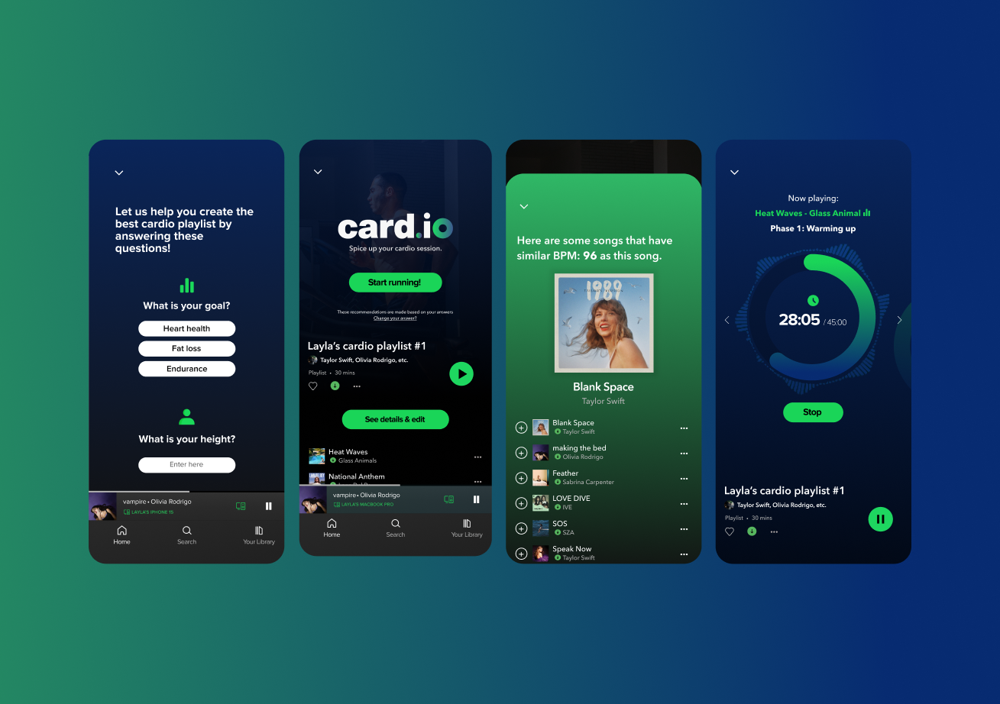
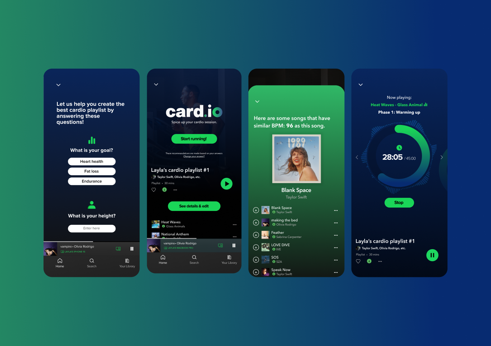

AI-powered community app for international students in Canada.
Jackalope helps international students in Canada settle in by connecting them with events and communities that align with their interests, while minimizing the impact of cultural shock.
My role in this project are designing the homepage, where the users will spend the most time on while using the app and planning & conducting the first usability testing after the first prototype.
Project type:
UX design & research
Duration:
2 months
Role:
User interface designer & researcher
Application:
ProtoPie
Team:
Jay Ho & Dominika Styk
Being an international student can be lonely, and navigating a new country, culture, and social scene can make it difficult to connect with friends or discover activities that help one feels at home!
Challenges
Many newcomers face difficulty finding events or communities that align with their interests due to the lack of centralized platforms designed specifically for their needs. Information is often scattered across multiple platforms or shared through word of mouth, making it overwhelming to navigate. Additionally, there is a lack of detailed, personalized guidance for adjusting to cultural shock in Canada, which can lead to feelings of social isolation.
Common goals
I aim to minimize the time it takes for newcomers to adjust to the cultural shock when arriving in Canada. Motivated by the desire to help them build a sense of belonging, I focus on creating solutions that connect individuals with friends and communities who share similar interests, easing their transition into their new environment.
Meet John Đỗ (19)
International student from Vietnam.
Intermediate English fluency.
What he likes:
Pokemon, gaming and VR technology.
What he is looking for:
Friends that share the same interests in Pokemon.
VR technology & gaming communities.
What he struggles with:
Finding VR gaming communities in his city.
Cultural shock from unfamiliar norms and uncertainty about what is considered 'normal'.

Problem statement
"How can we help international students build community, find events, and connect with interest-based groups while minimizing the initial cultural shock?"
1/4
Interests-based matching.
Users can select different areas of interests upon creating their profile.
These interests are shown publicly on a user’s profile page. This would allow users to see and connect with others if they have similar interests.
2/4
Events discovery.
Discover events & communities, view events' details, contact organizers, and RSVP or save events of interest.

3/4
AI assistance.
Jackalope provides tips to help international students navigate cultural differences.
Users can dislike a tip to contact organizers, ask the community, or provide feedback to improve future assistance.
4/4
Community messaging.
In-app messaging for direct communication between users and communities, or event organizers.


Try it yourself!
Or download the ProtoPie Player app from Google Play or App Store and scan the QR code to experience the app authentically on your phone.
SKETCHES
Sketches for the profile creation process.
Sketches for the process of discovering and accessing new events.


Accessing the AI feature
The AI feature was designed to:
Initially, the idea was that users could select a word or phrase they didn't understand, and the AI would explain it in the appropriate context.
However, this approach had the following issues:
Limited Proactivity: The AI's support was passive, requiring users to activate it manually.
* This reduced its ability to assist users effectively.
Unintuitive Interaction: Highlighting text to request an explanation felt unnatural.
* Making it difficult for users to recognize this as a viable interaction option.
Sketches for the process of organizing events.
LOW-FIDELITY WIREFRAMES & USER FLOW DIAGRAMS
Option 1
Option 2


Option 2's user flow diagram is more accessible and purposeful.
Prioritizing communities discovery.
While option 1’s user flow diagrams had access to event discovery, the final user flow and wireframes had more of a focus on finding communities.
The group chat function of the first 2 user flow options is hidden behind lots of interactions or only accessible through its event.
In the last user flow, users can access communities freely without having to rely on events.
Because the main goal of our interactive system is to connect people and help them find a new community, we found that this was the best user flow.
Encouraging new friendships.
Compared to option 1, where 1-on-1 chat is limited to between user and event organizers, and users can only chat with other users in a group settings, the last user flow allows users to:
While option 1 has more intuitive UI and diverse interactions.
Option 2’s UI has inconsistent design elements (button, text sizes, etc.).
Option 1’s UI offers a more diverse range of interaction, where more information can be revealed as user performs certain actions.
Whereas option 2’s UI does not have a similar range of interactions - all information is displayed by default with no interactions which leads to visual clutter and cognitive overload.
FIRST PROTOTYPE & USER TESTING
The first completed prototype of Jackalope
User study: Recruiting, Goals, Interviewing.
We selectively recruited 3 new international students at SFU as participants for this user testing to ensure our insights reflect the app's primary target audience.
Being new to the university, these participants are more likely to actively seek events and communities, making their feedback particularly relevant in assessing the app’s usability and effectiveness in addressing their needs.
We conducted our research with 3 interviews: 2 in-person interviews and 1 online interview.
Through this user testing, we aim to observe:
1) How easily can users achieve their goals of discovering and engaging with events and communities?
2) How effectively do users utilize the app's AI features, and how well do these features enhance their experience?
ISSUES FOUND
1/3
Difficulty navigating through the site or app, stuck in some areas like the "Join Group" or messages.
Frequency: frequent
Severity: high
2/3
Users fail to notice additional sections in the AI suggestion carousel due to lack of indicators.
Frequency: frequent
Severity: moderate
3/3
When AI malfunctions, it fails to provide satisfactory or additional information after unsatisfactory inputs.
Frequency: periodically
Severity: low to moderate
Navigation issue from community messages tabs to homepage.
Fail to fully utilize AI's feature due to unclear visual indicators.
When the user is having difficulties navigating the app’s pages, their frustration might make them lose interest in exploring the rest of the app.
If some features, like the AI, are not clearly available to the user, they may not realize that the feature is part of the app or they could be confused on where the feature could be.
This leads to the user not using the app to its full potential that could leave them feeling frustrated and confused.
REFINED INTERFACE
Click here to see Jackalope's final interface.
Make sure to enable different routes for users and make cancel options always available.
Make sure interaction design (buttons, texts, etc.) are all consistent throughout the app.
Make sure labels are clear (remove all abstract labels such as “See more”).
Iterate the UI so that the AI’s post malfunction interface offers to collect users’ input to help future assistance.
Having more support options available for users when they show dissatisfaction after the first suggestions.
 
